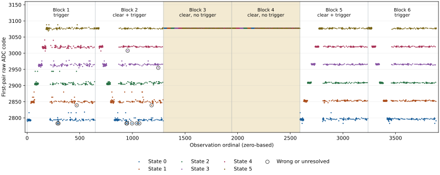
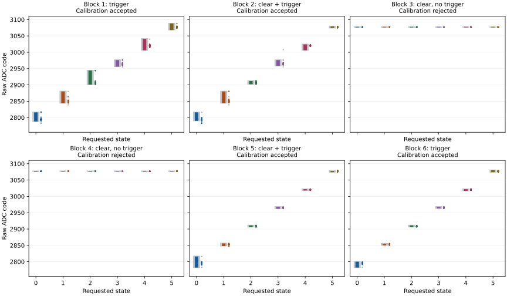

Question and preceding observations
Does the observed ADC status depend on issuing a conversion trigger, and do preliminary status clearing and trigger omission change the retained raw observations? The three-boot fixed-delay series recovered every scheduled observation but did not qualify reliable six-state recognition. Run 3 rejected its first calibration because states 3 and 4 overlapped before the guard was applied. Every conversion-control poll in those runs returned zero on its first read; every post-trigger status was one; repeated result pairs agreed.
These observations leave a specific ambiguity: an agreeing pair can contain either a newly acquired result or a retained result. The present experiment introduces a negative control and observes the status before a trigger and after cleanup. Bit 0 of register 0x801b is a candidate completion indicator, not an established register definition.
Hypothesis: after clearing status, bit 0 changes from zero to one when the trigger is issued and remains zero when it is omitted, then returns to zero after cleanup. An unexpected status pattern, a failed observation or a disagreement between result pairs prevents the complete declared criterion from being met. All raw outcomes are retained.
Declared method
One boot, six acquisition blocks, 3,888 observations. Retain the same apparatus, supply, cooling, six control codes 90, 93, 96, 99, 102 and 105, 1,000 microsecond pre-ADC delay, two-count calibration guard, operating guards, bus deadlines and restoration path. Numbers in this report are decimal unless prefixed 0x; the source's literal processor instruction words use explicit hexadecimal notation.
| Block | Mode | Training order | ADC action |
|---|---|---|---|
| 1 | 0 | Ascending | Observe status; trigger |
| 2 | 1 | Descending | Clear status; observe status; trigger |
| 3 | 2 | Ascending | Clear status; observe status; omit trigger |
| 4 | 2 | Descending | Clear status; observe status; omit trigger |
| 5 | 1 | Ascending | Clear status; observe status; trigger |
| 6 | 0 | Descending | Observe status; trigger |
All modes reset the ADC, wait at least 20 microseconds, enable one slot and select channel 0x0f. The added preliminary clear uses the existing cleanup write, 0x801b = 3; the trigger is 0x8018 = 1. The same bounded busy-bit polling and error-bit check follow the trigger slot, including in the omitted-trigger condition. Read low/high twice, retain both pairs, clear status, then read status again. No unfamiliar register is written. A transport failure ends bus access; timeout or ADC error attempts cleanup and retains failure status.
Mode 2 is a negative control. Its numeric result may be retained, reset or otherwise affected by the device; availability means only that both octets were received. Those values cannot qualify a fresh conversion. Its empty trigger slot is shorter than a write transaction; counters retain the actual intervals, and no timing-equivalence claim is made.
Each block contains 216 training observations: 36 consecutive conversions or diagnostic reads at each control. Freeze the resulting candidate bands before 432 held-out observations covering all 36 ordered control transitions six times, including self-transitions. Reject overlapping or underflowing bands and continue raw acquisition with recognition unavailable. Restore the original control after every block. Hardware, transport, operating-condition or restoration failure stops acquisition and retains the attempted prefix.
The mode order brackets the other conditions with mode 0 and gives each mode both training directions. It is fixed, not randomized. Mode, block position and elapsed operation remain associated. No early observations are discarded and no parameter is retuned during the run.
Assessment and decisions
The primary criterion concerns a trigger-dependent status signature. Require complete recovery of all 3,888 observations, successful acquisition and operating checks, matching initial/final controls, all restoration checks, complete status observations and agreement between each repeated result pair. Each mode must supply all 1,296 scheduled observations.
| Mode | Before trigger slot | After trigger slot | After cleanup |
|---|---|---|---|
| 0: trigger | Recorded, unrestricted | 1 | 0 |
| 1: clear and trigger | 0 | 1 | 0 |
| 2: clear, no trigger | 0 | 0 | 0 |
If the complete signature is observed, it supports using trigger-dependent status as an additional acquisition check. It does not independently establish a new analog conversion, exclude concurrent interference, calibrate ADC accuracy or qualify six-state recognition. If the no-trigger control also reports bit 0 set, the proposed exclusive trigger relation is not established. If clearing does not produce an observed zero, the candidate clear/completion interpretation is insufficient. A missing or failed observation cannot count as a matching signature.
Secondary assessments report every block's training extrema, adjacent overlaps, frozen bands, correct/wrong/unresolved/unavailable held-out recognition, status patterns, pair disagreements, timings, requested predecessor/destination, observed CPU frequency and raw thermal codes. Compare modes 0 and 1 descriptively in both directions. Mode 2's classification counts describe a negative control and cannot establish operational state recognition.
An overlapping calibration is a measured outcome, not a reason to widen a band or delete a reading. Relate exceptional codes to their status, preceding control and byte-pair agreement. Differences between conditions identify candidates for a later controlled test; this one fixed sequence does not isolate elapsed-time effects or establish an optimal ADC procedure.
Results
The declared trigger-dependent status criterion was met. All 3,888 observations were recovered, with 1,296 per mode. All acquisition and operating checks reported success, both control readbacks matched each request, every repeated result pair agreed, and all six block restorations and the final restoration reported success. The status values below are the complete observed octets, not only their bit-0 projections.
| Mode | Before trigger slot | After trigger slot | After cleanup | Matching / scheduled |
|---|---|---|---|---|
| 0: trigger | 0 | 1 | 0 | 1,296 / 1,296 |
| 1: clear and trigger | 0 | 1 | 0 | 1,296 / 1,296 |
| 2: clear, no trigger | 0 | 0 | 0 | 1,296 / 1,296 |
Trigger omission returned raw code 3,077 in all 1,296 observations, despite each of the six states being requested 216 times with matching control readbacks. Code 3,077 also occurred at ordinal 1,295, the last triggered observation before omission. All negative-control training intervals were therefore identical; both calibrations were rejected and all 864 held-out classifications were unavailable. These readings do not establish that the physical voltage remained constant. When triggering resumed at ordinal 2,592, the first state-0 reading was 2,796.
Among the 1,728 triggered held-out observations, 1,717 were correct, 1 was wrong and 10 were unresolved. Every triggered block accepted its training calibration; only the final two blocks recognized all 432 held-out observations correctly. The negative-control readings are reported separately and are not counted as operational recognition failures or successes.
| Block | Mode | Calibration | Correct | Wrong | Unresolved | Unavailable |
|---|---|---|---|---|---|---|
| 1 | 0 | Accepted | 429 | 0 | 3 | 0 |
| 2 | 1 | Accepted | 424 | 1 | 7 | 0 |
| 3 | 2 | Rejected: all bands overlap | 0 | 0 | 0 | 432 |
| 4 | 2 | Rejected: all bands overlap | 0 | 0 | 0 | 432 |
| 5 | 1 | Accepted | 432 | 0 | 0 | 0 |
| 6 | 0 | Accepted | 432 | 0 | 0 | 0 |
The one wrong classification occurred at zero-based ordinal 955 in block 2, after a state-5 request. State 3 was requested; raw code 3,008 was recognized as state 4. Both control readbacks were 99 and both result pairs were 3,008. The frozen state-3 band was 2,957–2,978; the state-4 band was 3,005–3,026. The observed status sequence was 0 → 1 → 0. A matching trigger signature therefore did not prevent this recognition error.
Raw observations and calibration
{kind=link}

| Block | State 0 | State 1 | State 2 | State 3 | State 4 | State 5 |
|---|---|---|---|---|---|---|
| 1 | 2789–2816 | 2845–2880 | 2902–2944 | 2957–2976 | 3007–3041 | 3069–3088 |
| 2 | 2791–2816 | 2845–2880 | 2903–2912 | 2959–2976 | 3007–3024 | 3075–3079 |
| 3 | 3077–3077 | 3077–3077 | 3077–3077 | 3077–3077 | 3077–3077 | 3077–3077 |
| 4 | 3077–3077 | 3077–3077 | 3077–3077 | 3077–3077 | 3077–3077 | 3077–3077 |
| 5 | 2783–2816 | 2849–2856 | 2907–2911 | 2963–2968 | 3019–3022 | 3075–3078 |
| 6 | 2783–2800 | 2851–2855 | 2907–2911 | 2964–2968 | 3018–3022 | 3075–3080 |
{kind=link}

The ten unresolved readings were all below their requested-state bands: raw 2,783 at ordinals 289, 298, 944, 949, 997, 1,041 and 1,066; raw 2,839 at ordinals 471 and 1,183; and raw 2,955 at ordinal 1,246. Their exact requests, preceding observations and bands are retained in the descriptive assessment. No raw value or band was adjusted after acquisition.
Each busy-control read returned zero on the first poll, including with the trigger omitted. No busy transition was observed. ADC call durations were 26.598–26.805 ms in mode 0, 28.358–28.567 ms in mode 1, and 26.603–26.805 ms in mode 2. These are software-call intervals, not measured conversion latency. The omitted trigger slot took 0.241–0.611 microseconds, compared with 1.745–1.897 ms for a trigger write across modes 0 and 1.
All operating checks reported success. Observed CPU-frequency readings ranged from 1,499,970,782 to 1,500,029,216 Hz; retained thermal codes ranged from 746 to 772. These thermal codes are not independently calibrated temperatures. Acquisition took 140.008 seconds; the recorded trial-start to final-section interval was 1,121.808 seconds, approximately 18 minutes 42 seconds. Neither interval independently measures the full reported 30-minute power window.
Interpretation and next question
The observed status changes support the proposed trigger-dependent interpretation of bit 0 for this access sequence. The constant negative-control result, equal to the immediately preceding triggered reading, supports retained-result behavior. Together, these observations provide evidence for checking a status transition in addition to result availability and pair agreement.
This experiment did not independently establish analog conversion freshness, ADC accuracy or exclusive ownership of the device. Mode, sequence position and elapsed operation were associated, and the omitted-trigger slot was shorter than a write. The one wrong classification and ten unresolved readings also leave full six-state recognition unqualified. The final two blocks' complete recognition cannot be generalized to startup or later boots.
The next question is whether the early recognition errors recur when control transitions and acquisition timing are varied under a verified trigger-status sequence. A subsequent protocol should preserve the negative control, raw values, byte pairs and status observations, and distinguish transition history from elapsed operation before choosing a permanent acquisition or calibration rule. The present SD return and the pre-run criteria remain preserved.
Acquisition and evidence
Reported conditions: approximately ten minutes powered off before SD insertion, one 30-minute powered run, then power off before SD removal. These are operator-reported intervals. Two complete read-only acquisitions of the first 64 MiB matched byte-for-byte. The native journal contains 24,932 occupied sectors and 7,772 unchanged empty reservations; all expected words were recovered with no journal issues.
Capture SHA-256: 409d216e21406d19e2de18e8cc922926d6d20bb198c987a6f5f9ec4200ca5835
Windows reported FAT32 / Healthy / OK. The captured boot-status octet was zero and both FAT entry-1 values were 0xffffffff; the preceding return's dirty indicators were absent. The MBR, partition geometry and both boot files were unchanged, and the FAT copies agreed. Seven sectors outside the native journal differed from the prepared image; the byte-level assessment preserves every difference, including the added System Volume Information directory. The writer and timing of those changes are not established by this capture, and these checks do not constitute a complete medium-health assessment. No format or repair was performed during acquisition.
The independent reader reconstructs the native records and recomputes classifications from frozen training bands. The logbook build verifies artifact sizes and hashes and reproduces both the primary and secondary assessments. Return validation checks reconstruction, negative-control retention, preservation of the wrong classification, missing/unexpected-status rejection and boot-file integrity.
SEIGRASM execution and recording
The existing ROM/EEPROM loader supplies entry to the project's literal AArch64 SEIGRASM instructions. The execution path is entry, launch, SD initialization and checkpoints, operating checks, GPIO route acquisition, ADC preflight, six-block scheduling, control selection, diagnostic acquisition, native calibration/recognition, restoration and journal writing. The boot-firmware dependency remains unchanged.
The controlled-trigger operation has two entries: acquisition at offset 0, and sample-mode selection at offset 4. Sample-mode selection binds min(block, 5 - block) and continues through the existing delay and supervision operations. The ADC context adds a mode at word 7; the sample context adds the delay entry at word 12. The preflight uses mode 0. All older instruction regions remain byte-identical; existing electrical and SD protection paths remain active.
PC image packaging copies authored opcode words and configuration data. It does not implement the target acquisition or invoke a foreign assembler/compiler. The PC media writer checks disk identity, preserves the replaced extent, writes the image and independently reads it back. Its Windows API calls are PC transfer tooling. Target recording uses SEIGRASM and SGDATA01 sectors before the boot partition; it does not write a FAT journal.
Configuration schema 4 records the six modes. Each observation retains 64 words; its last 32 use diagnostic schema 2. The first 32 words retain the existing control, raw-value, recognition, timing and operating-condition fields. Every value has an explicit status or availability relation.
| Words | Contents |
|---|---|
| 0–3 | Schema, mode, ADC return status, channel selector |
| 4–5 | Trigger-slot start/end counters; no write in mode 2 |
| 6–9 | Busy-poll count, first/final value, post-trigger status-read counter |
| 10–11 | Post-trigger status and availability |
| 12–23 | First low, first high, second low, second high; each with availability and counter |
| 24–25 | Pair disagreement and comparison availability |
| 26–29 | Pre-trigger status/availability; status after cleanup/availability |
| 30–31 | Programmed delay in microseconds and counter ticks |
The maximum journal remains 24,932 occupied sectors within 32,704 reservations. The independent return reader verifies the journal and configuration, recomputes bands and recognition, retains each mode separately and assesses the declared status signatures. Supplied-device validation exercises omitted triggers, stale/stuck status, zero results, byte disagreement, timeout, transport failure, complete scheduling and connected boot/GPIO/SD failure recovery. Those checks establish software behavior under supplied inputs, not physical outcomes.
SD preparation and physical procedure
Candidate 559940216B77 was installed and readback-verified before this run. All 203 software checks passed against unchanged sources. The reopened-device readback of all 67,108,864 bytes matched the prepared image. The physical results and returned evidence are now available; the frozen pre-run protocol remains unchanged.
Image SHA-256: 9fb5745fc2bd1db30f448d2100b1efeb3e33d624006e7c29a556ccb9952d4e17
The pre-write backup exactly matched the preserved run-3 capture. Windows reported the newly installed boot volume as Healthy / OK. This records the installation state; it does not establish why the preceding volume became dirty or predict its next return.
- Keep the testing Pi powered off for at least five minutes before the boot. Use the same supply and cooling arrangement.
- Safely eject the prepared SD from the PC and insert it into the powered-off Pi.
- Power on once and leave it uninterrupted for 30 minutes. Acquisition runs once; the candidate attempts restoration, records the journal and parks.
- Power off before removing the SD and return the card to the PC. Do not boot the occupied journal again.
- Cancel any Windows format or repair prompt until the return has been captured. Preserve two matching read-only 64 MiB reads, volume status and reported deviations before preparing another image.
The prior run's complete native journal was preserved despite its dirty boot-volume status. The new installation must preserve the exact region it replaces and pass a complete reopened-device readback. Record any warning on return separately from native journal integrity. The 30-minute power window exceeds the preceding final-record interval of approximately 18 minutes 22 seconds; target counters will establish this run's actual interval.